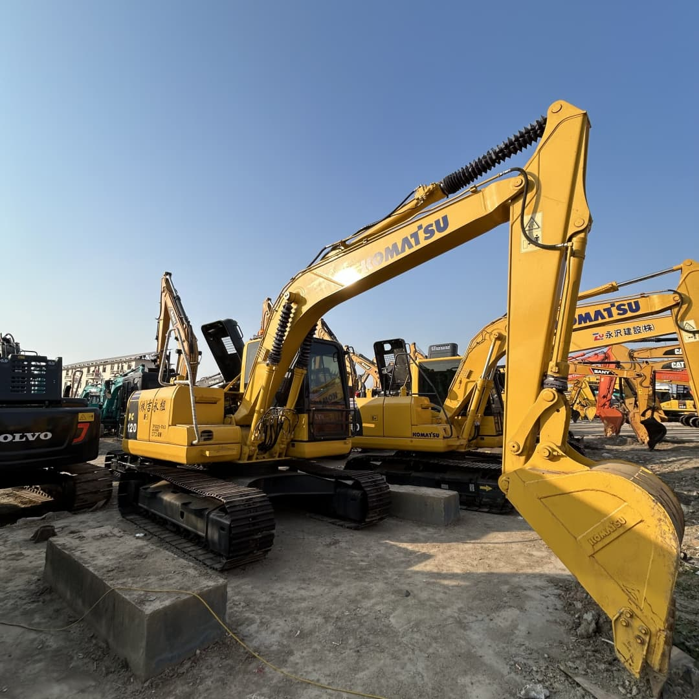

Refurbished Komatsu PC120 Excavator
The Komatsu PC120 is a compact yet powerful hydraulic excavator designed for a wide range of construction, mining, and landscaping applications. Known for its robustness and precision, the PC120 offers reliable performance in demanding environments, especially in urban and confined spaces. Refurbishing a Komatsu PC120 provides a cost-effective solution for businesses needing high-performance machinery without the hefty price tag of a new machine. This refurbished model undergoes comprehensive restoration to ensure it meets or exceeds the original specifications, making it a smart choice for those seeking a balance between cost and functionality.
Honestly, it's almost impossible to buy a brand new excavator from China. They either don't exist or are made in China. If a Chinese seller tells you their Caterpillar/Komatsu/Volvo/Kobelco/Hitachi is brand new, they're lying. Therefore, a refurbished excavator is your best bet.

Here are the detailed specifications for a refurbished Komatsu PC120-6 or PC120-8 excavator:
Operating Weight and Dimensions
- Operating Weight: 11,800–12,500 kg
- Overall Length: ~7.5–7.8 meters
- Overall Width: ~2.49–2.6 meters
- Overall Height: ~2.8–3.0 meters
- Tail Swing Radius: ~2.2–2.4 meters
- Ground Clearance: ~420–450 mm
- Track Width: 500–600 mm standard
Engine and Powertrain
- Engine Model: Komatsu SAA4D102E-2 or 4D102E (Tier 2 compliant)
- Rated Power Output: ~66–72 kW (88–97 hp) @ 2,000 rpm
- Maximum Torque: ~380–420 Nm
- Fuel Tank Capacity: ~240–260 liters
- Travel Speed: 3.5–5.5 km/h
- Swing Speed: ~10 rpm
- Gradeability: Up to 70% (35°)
Hydraulic System
- Main Pump Type: Closed Center Load Sensing (CLSS) axial piston pumps
- Flow Rate: ~2 × 160–180 L/min
- System Pressure: Up to 31.5–34.3 MPa
- Hydraulic Oil Capacity: ~220–240 liters
- Boom Cylinder Bore: ~115 mm
- Arm Cylinder Bore: ~100 mm
- Bucket Cylinder Bore: ~90 mm
Performance Metrics
- Bucket Capacity: 0.45–0.6 m³ (SAE heaped)
- Max Digging Depth: ~5.3–5.5 meters
- Max Reach (Horizontal): ~8.5–8.8 meters
- Max Dump Height: ~5.6–5.8 meters
- Bucket Digging Force: ~100–105 kN
- Arm Digging Force: ~65–70 kN
Cab and Operator Features
- Cab Type: ROPS/FOPS certified
- Display: LCD monitor with diagnostics and fuel tracking
- Controls: Pilot-operated joysticks with auxiliary hydraulic circuit
- Comfort: Adjustable suspension seat, optional air-conditioning
- Visibility: Wide glass area, optional rear-view camera, LED work lights
Smart Features and Efficiency
- Fuel Efficiency: Mechanical fuel injection with auto idle
- Emissions Control: Tier 2 compliant (no DPF or SCR)
- Telematics: KOMTRAX support in PC120-8 (optional)
- Transportability: Easily trailerable under 13-ton class
Attachments Compatibility
- Standard Bucket: 0.45–0.6 m³
- Optional Tools: Hydraulic breaker, auger, compactor, ripper
- Quick Coupler: Manual or hydraulic options available
Refurbishment Scope
Refurbished PC120 units typically include:
- Engine Overhaul: Cylinder head, injectors, turbo, seals
- Hydraulic Restoration: Pump recalibration, valve block testing, hose replacement
- Electrical Diagnostics: Monitor, sensors, wiring harness
- Cab Reconditioning: Seat, joysticks, HVAC, repainting
- Structural Repairs: Boom/bucket welding, bushing replacement, undercarriage rebuild
Overview of the Komatsu PC120 Excavator
The Komatsu PC120 is part of Komatsu's mid-range excavator series, combining the perfect blend of performance, efficiency, and versatility. Its compact size allows it to operate in tighter spaces, while its powerful engine and advanced hydraulics provide the strength required for various demanding tasks. The PC120 excels in urban construction, utilities, and other industries where compact equipment is essential for maximizing productivity in small or difficult-to-access job sites.
Key Specifications of the Komatsu PC120
-
Operating Weight: 12,000–12,500 kg (26,455–27,555 lbs)
-
Engine Power: 70–75 kW (93.6–100 hp)
-
Max Digging Depth: 5.5 meters (18.0 feet)
-
Max Reach: 8.5 meters (27.9 feet)
-
Bucket Capacity: 0.4–0.6 cubic meters (14.1–21.2 cubic feet)
-
Fuel Tank Capacity: 160 liters (42.3 gallons)
-
Travel Speed: 5.5 km/h (3.4 mph)
These specifications make the PC120 a highly versatile machine capable of tackling a variety of tasks with ease. Whether you need to dig trenches, move material, or carry out demolition work, this excavator is well-suited for projects that require both power and maneuverability.
Engine and Performance
The Komatsu PC120 is equipped with a reliable engine designed for optimal fuel efficiency and power. The engine delivers the necessary horsepower to handle tough excavation tasks while maintaining operational efficiency and reducing downtime.
-
Powerful Engine: The PC120 is powered by a Komatsu SAA4D95LE-5 engine, which provides a range of 93–100 horsepower. This engine is known for its durability and ability to perform under high loads, whether you are working with dense soil or lifting heavy materials.
-
Fuel Efficiency: The PC120’s engine is designed with fuel-saving technology, allowing operators to complete more work while consuming less fuel. This is essential for businesses looking to reduce operating costs and improve the machine's overall profitability.
-
Lower Emissions: The PC120 complies with modern environmental standards, making it a sustainable choice for projects requiring low emissions. By reducing exhaust output, it helps companies adhere to environmental regulations while contributing to cleaner air quality.
Hydraulic System
The hydraulic system is one of the core components that determine the performance of an excavator. In the Komatsu PC120, the hydraulics deliver exceptional strength, precision, and control for operators.
-
Load-Sensing Hydraulics: The PC120 features an advanced load-sensing hydraulic system that adjusts the flow of hydraulic fluid based on the work demands. This results in better fuel economy and faster cycle times while still providing optimal power for heavy digging and lifting tasks.
-
Efficient Hydraulic Control: The hydraulics of the PC120 allow for smooth, precise control during operations, which is vital when working in delicate or confined spaces. The system allows operators to fine-tune the bucket or arm movement, improving accuracy and reducing wear and tear on the machine.
-
High Lifting and Digging Performance: The hydraulic system is designed to offer high lifting capacity and digging depth, making the PC120 effective for various tasks such as trenching, loading, and lifting heavy loads.
Compact and Maneuverable Design
One of the key advantages of the Komatsu PC120 is its compact design, which allows it to operate efficiently in tight spaces. This makes the machine an excellent choice for urban construction, landscaping, or any job site where maneuverability is essential.
-
Narrow Width: With a width of around 2.5 meters (8.2 feet), the PC120 is narrow enough to access spaces that larger machines cannot reach. This is ideal for projects in residential areas, streets, or any other environments where space is limited.
-
Low Tail Swing: The PC120 features a low tail swing design, meaning that the rear of the excavator remains within its width when rotating. This reduces the risk of damaging nearby structures or obstacles while improving safety in confined workspaces.
-
Enhanced Stability: Despite its compact size, the PC120 is highly stable, ensuring that it can handle challenging tasks like digging or lifting heavy loads even in uneven terrain. The low center of gravity and wide stance of the machine contribute to its stability.
Operator Comfort and Safety Features
Komatsu prioritizes operator comfort and safety in the design of the PC120. The machine’s cabin is designed to reduce fatigue, improve visibility, and enhance overall safety, helping operators stay productive during long working hours.
-
Ergonomically Designed Cabin: The operator’s cabin features a spacious, comfortable seat, adjustable controls, and a well-organized dashboard for easy access to all functions.
-
Visibility: The cabin’s large windows provide excellent visibility, which is critical when working in confined or busy job sites. This improves safety and allows operators to work with precision.
-
Safety Features: The PC120 is equipped with rollover protective structures (ROPS) and falling object protective structures (FOPS) to keep the operator safe in hazardous environments. These features minimize the risk of injury and damage during operation.
Benefits of Choosing a Refurbished Komatsu PC120
Opting for a refurbished Komatsu PC120 offers several significant benefits, especially for businesses looking to maximize their return on investment. A well-maintained, refurbished excavator can deliver the same performance as a new machine at a fraction of the cost. Here’s why refurbished Komatsu PC120 models are a wise choice:
-
Lower Upfront Cost: Refurbished Komatsu PC120 units are typically 30-40% cheaper than new machines, making them an attractive option for businesses working within a budget.
-
Comprehensive Refurbishment: A refurbished PC120 undergoes thorough inspection and repairs, ensuring that all critical components—such as the engine, hydraulic systems, and undercarriage—are restored to their original condition. This process ensures the machine’s performance and extends its lifespan.
-
Warranty Options: Many refurbished excavators come with warranties, offering peace of mind and reducing the risk of unexpected repair costs.
-
Sustainability: Purchasing a refurbished excavator helps minimize waste and environmental impact by extending the life of existing equipment.
Maintenance Tips for the Komatsu PC120
To get the most out of your Komatsu PC120, regular maintenance is essential. Here are a few maintenance tips to keep the machine in top condition:
-
Hydraulic System: Ensure that hydraulic fluid levels are checked regularly, and filters are replaced as needed to keep the hydraulic system clean and functioning properly.
-
Engine Maintenance: Regularly inspect oil levels, replace air filters, and clean the cooling system to prevent engine overheating.
-
Undercarriage Care: Inspect the undercarriage frequently for signs of wear, particularly the tracks, rollers, and sprockets. Replacing worn-out components promptly can prevent more significant issues down the road.
-
Routine Inspections: Regularly check for loose bolts, leaks, or other signs of damage that could impact the machine’s performance or safety.
Conclusion
The Komatsu PC120 is a compact, durable, and highly efficient excavator ideal for a variety of applications, from urban construction to landscaping. Its powerful engine, advanced hydraulic system, and ergonomic design make it a versatile machine capable of handling tough tasks in confined spaces. Choosing a refurbished Komatsu PC120 offers significant savings without compromising on performance or reliability. Whether you're looking to tackle excavation projects or move materials in tight areas, this refurbished machine offers the perfect combination of power, precision, and value.
Our Commitment
- 2 years / 4000 hours warranty.
- EPA certified.
- No sweatshop labor.
Contacts

- [email protected]
- Youtube Instagram Facebook
- Navigation: G206 (Sishu Bridge) in Changfeng County, Hefei City, Anhui Province, 200 meters north to the east